screenshots to tell about bomi
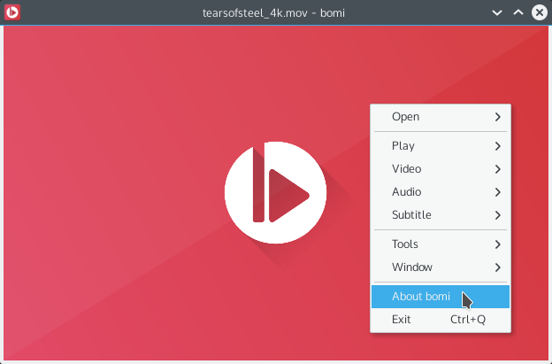 bomi does not have menu bar which can be found lots of GUI applications. Instead, everything is inside of context menu which is usually triggered by clicking right mouse button.
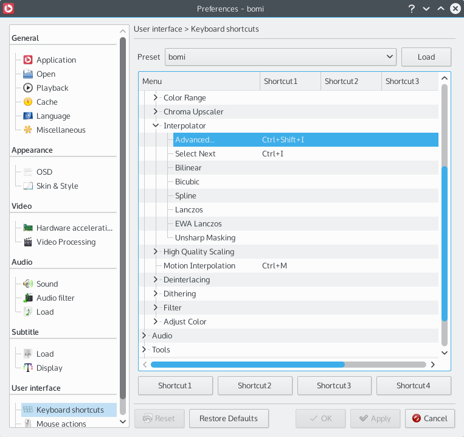 Preference, options, or configuration, whatever you called, they are here. I'm trying to keep the main interface as simple as possible, but never give up customizability.
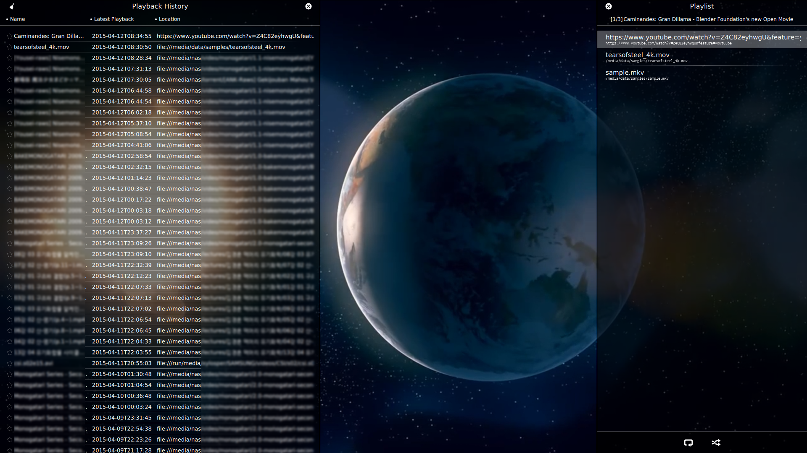 (Please forgive me about blurred parts for privacy) History and playlist are also included inside player. Literally, inside. You can access them easily by hovering mouse on each edge, or type their shorcuts (C for history and L for playlist by default).
bomi provides an on-screen-displayed playback information (triggered by Tab by default). This shows advaned informations about playing media tells about current playback state.
bomi comes with various skins. Skin defines bomi's theme and controls.
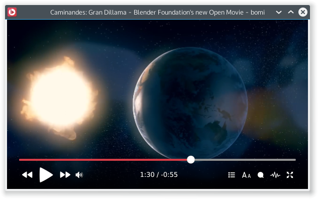
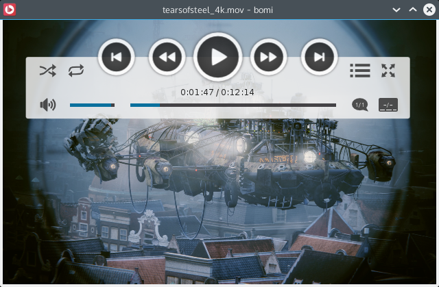
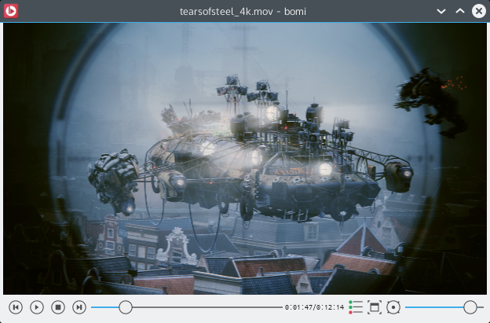
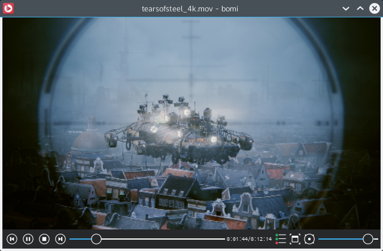
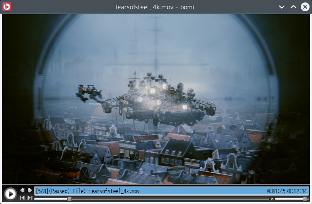
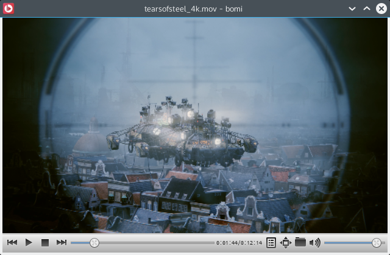
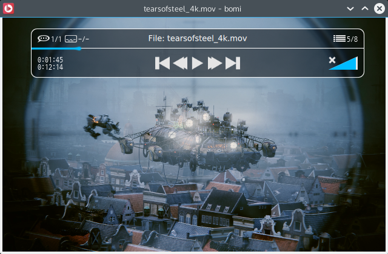
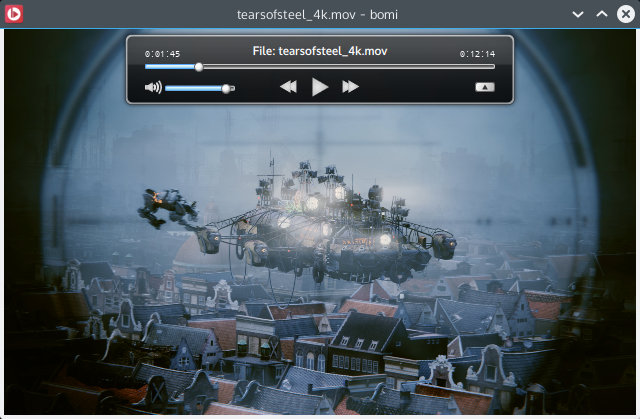
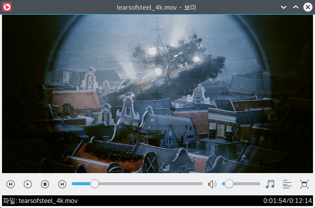
This skin supports native widget look & fell. The screenshot is taken for Plasma 5 with Breeze theme.
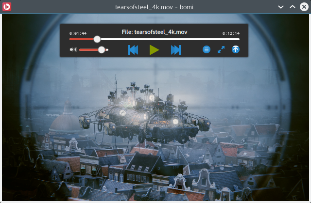
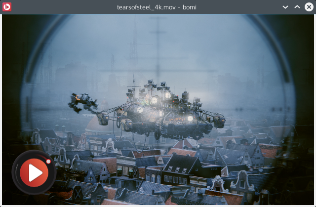
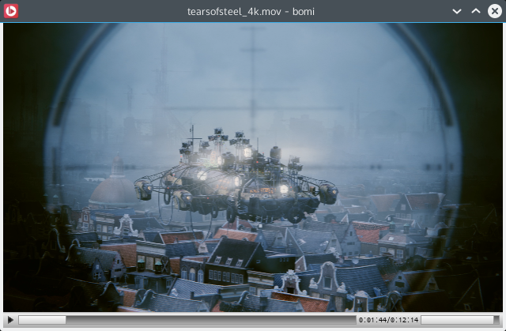
{kind=link}
{kind=link}
{kind=link}